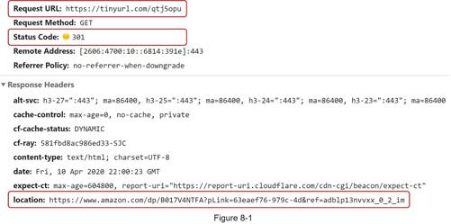
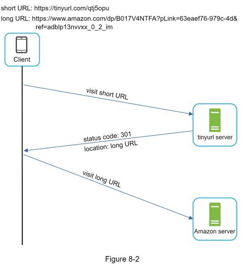
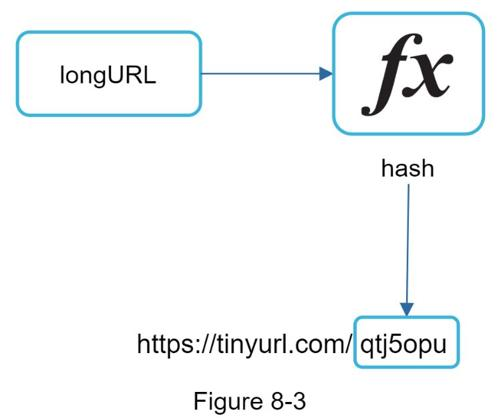

In this section, we discuss the API endpoints, URL redirecting, and URL shortening flows.
API endpoints facilitate the communication between clients and servers. We will design the APIs REST-style. If you are unfamiliar with restful API, you can consult external materials, such as the one in the reference material [1]. A URL shortener primary needs two API endpoints.
1.URL shortening. To create a new short URL, a client sends a POST request, which contains one parameter: the original long URL. The API looks like this:
POST api/v1/data/shorten
•request parameter: {longUrl: longURLString}
•return shortURL
2.URL redirecting. To redirect a short URL to the corresponding long URL, a client sends a GET request. The API looks like this:
GET api/v1/shortUrl
•Return longURL for HTTP redirection
Figure 8-1 shows what happens when you enter a tinyurl onto the browser. Once the server receives a tinyurl request, it changes the short URL to the long URL with 301 redirect.

The detailed communication between clients and servers is shown in Figure 8-2.

One thing worth discussing here is 301 redirect vs 302 redirect.
301 redirect. A 301 redirect shows that the requested URL is “permanently” moved to the long URL. Since it is permanently redirected, the browser caches the response, and subsequent requests for the same URL will not be sent to the URL shortening service. Instead, requests are redirected to the long URL server directly.
302 redirect. A 302 redirect means that the URL is “temporarily” moved to the long URL, meaning that subsequent requests for the same URL will be sent to the URL shortening service first. Then, they are redirected to the long URL server.
Each redirection method has its pros and cons. If the priority is to reduce the server load, using 301 redirect makes sense as only the first request of the same URL is sent to URL shortening servers. However, if analytics is important, 302 redirect is a better choice as it can track click rate and source of the click more easily.
The most intuitive way to implement URL redirecting is to use hash tables. Assuming the hash table stores <shortURL, longURL> pairs, URL redirecting can be implemented by the following:
•Get longURL: longURL = hashTable.get(shortURL)
•Once you get the longURL, perform the URL redirect.
Let us assume the short URL looks like this: www.tinyurl.com/{hashValue}. To support the URL shortening use case, we must find a hash function fx that maps a long URL to the hashValue, as shown in Figure 8-3.

The hash function must satisfy the following requirements:
•Each longURL must be hashed to one hashValue.
•Each hashValue can be mapped back to the longURL.
Detailed design for the hash function is discussed in deep dive.